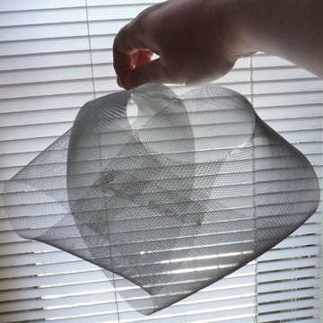

K N O T F O R M
by Aaron Hope
'Mobius Wave', Paper Mache

'Sunshine Knot', Paper Mache

'Light Fireplace', Paper Mache

'Anti-Symmetry', Metal and Plaster

'Valentines, Hearts and Arrowheads', Collaboration with Shiva, Paper Mache
'Mobius with Three Nests', Paper Mache
'Illumiknotti', Paper Mache and LED

'Borromean Crown Lamp', Metal and Fiberglass with Upcycled Lamp
Thanks for visiting!
WHY KNOT ?
Knot theory is the mathematics
field studying closed-loop knot and string shapes formed in things like our DNA
strands, and also in daily life in tied shoelaces and rope. Mathematical knots
embed a circle in 3-d space.
Structure is from repeated modular elements in
tension. Each half twist of any modular surface section creates a different
mathematical knot type and surface characteristic. All these forms are found in
nature.

Aaron Hope lives in Brooklyn, New York.